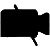
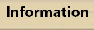

WorkAdventure manual:
Functions
- Zoom in/out: Strg + , Strg -
- Move: Arrow keys: → , ← , ↑ , ↓ or. W , A , S , D
- Run:
⇧ Shift + arrow or
⇧ Shift +
W ,
A ,
S ,
D
Notice: Conversations will be interrupted while running, not while walking - as long as persons are together within one circle. - Communicate: Automatically when meeting persons (a circle is drawn around the group) and in conference tools.
- Chillout areas/lecture rooms: No communication possible.
- Change floor: Use staircases to move between floors.
- Walls: The avatar can not go through walls, walk around them.
-
Mute:  The mute symbol marks a place to have a rest, there are no communication possibilities.
-
Jitsi: The camera symbol shows Jitsi group rooms. You can get in contact with more than four persons here.
-
Menu:
 In the menu on the upper left several settings can be reached, e.g. you can change your name and avatar here.
In the menu on the upper left several settings can be reached, e.g. you can change your name and avatar here.
-
Infopoint:  Here you can get university information.
Map
Rules
- No insults
- Don't bother anyone if they refuse communication
- Make sure you can be seen well (If you want to be seen)
- Make sure you can be heard well (If you want to be heard)